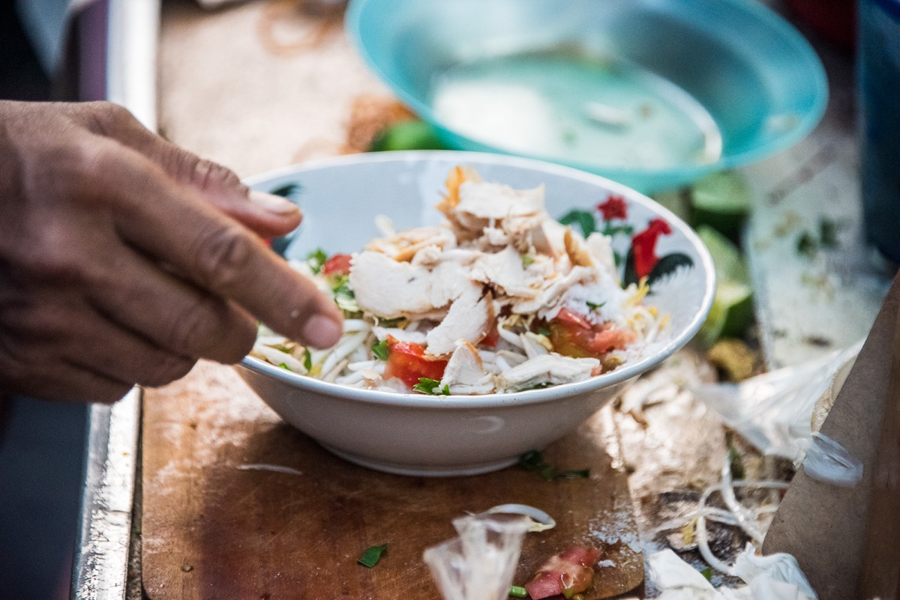
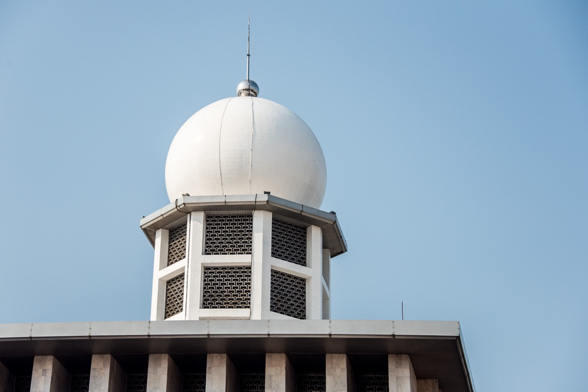
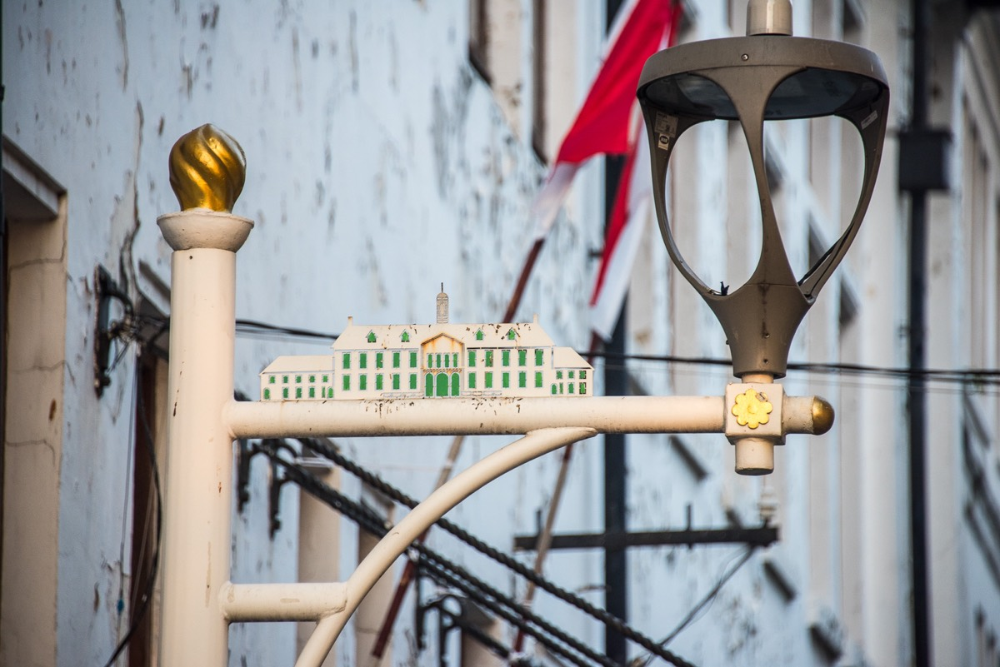
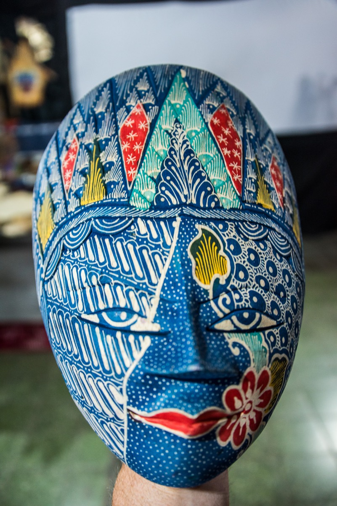
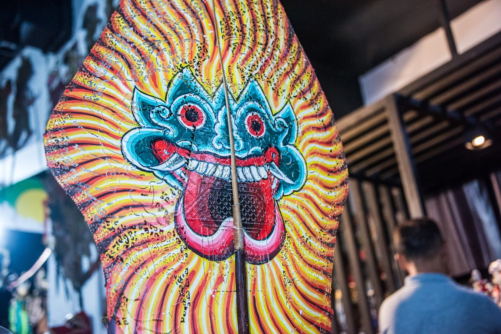
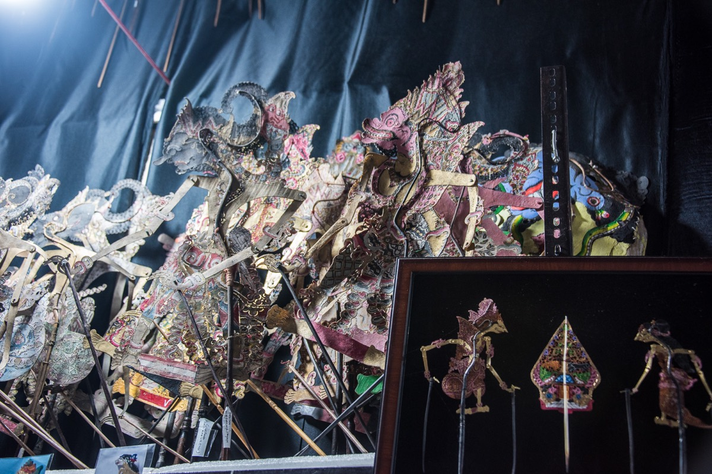
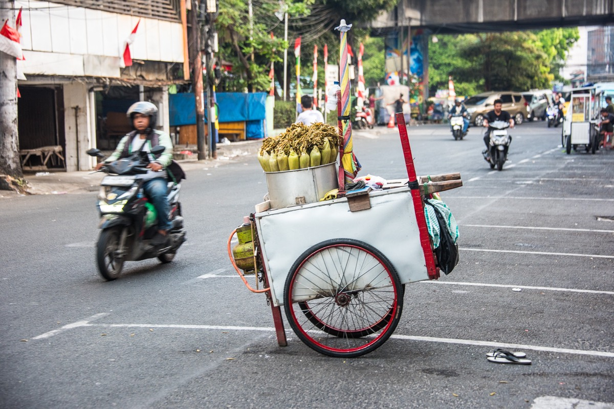
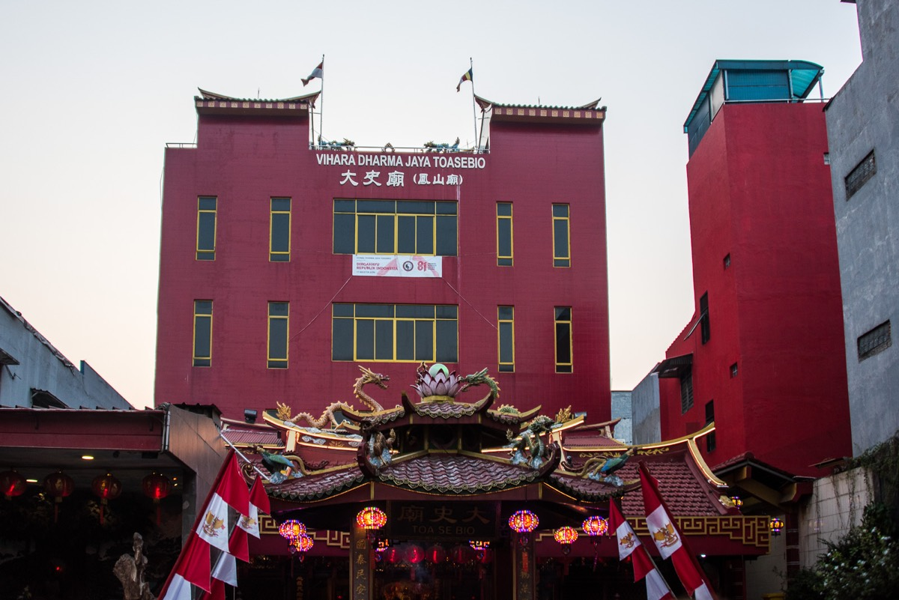

A City Built
Three Times Over
The guide meets her groups at the cathedral gate, sunglasses pushed up on her head, and warns everyone straight away that four hours is not really enough for Jakarta. The city has been rebuilt, renamed and relocated so many times that even a short walk through its oldest quarter means picking through several histories layered on top of one another.
The site began as Sunda Kelapa, a Sundanese trading port at the mouth of the Ciliwung River. In 1619 the Dutch East India Company (VOC), under Jan Pieterszoon Coen, destroyed the town that had stood there — by then renamed Jayakarta — and built its own walled trading capital on the ruins, calling it Batavia. For roughly two centuries Batavia was the administrative heart of the Dutch East Indies, a company town before it was a colonial one.
Japan occupied the Dutch East Indies from 1942 to 1945. Two days after Japan's surrender, on 17 August 1945, nationalist leader Sukarno proclaimed Indonesian independence in Jakarta — the date the country still marks as its birth. The Netherlands did not formally recognise that independence until the Dutch–Indonesian Round Table Conference in The Hague in December 1949, which is why some Dutch institutions still date Indonesian sovereignty four years later than Indonesians themselves do.
Today's Jakarta carries a newer anxiety than its colonial one: it is sinking. Parts of the city are settling by anywhere from a few centimetres to over 20cm a year, driven mainly by decades of groundwater extraction into soft, swampy soil — among the fastest subsidence rates of any major city on Earth. It's the backdrop to the tour's final stretch, and to Indonesia's slow, still-unfinished plan to shift its seat of government to a new capital, Nusantara, under construction in the forests of East Kalimantan since 2022. As of 2026, Jakarta legally remains the capital while ministries relocate in stages — a process the guide, like many Jakartans, has mixed feelings about.
The Cathedral That
Fell Down First
Catholic worship was restricted for most of the VOC era — the Dutch, as Protestants, limited it to Flores and Timor — and only opened up in Batavia after Napoleon's brother Louis, then king of Holland, permitted Catholic missionary activity in the early 19th century. Land for the first church here was granted in the late 1820s.
The building on this site today is not the original. A first church, completed in 1829, collapsed on 9 April 1890 after years of poor maintenance and structural neglect — not, as guides sometimes say on the day, an earthquake.
Its replacement was designed by Antonius Dijkmans, a Dutch Jesuit priest trained in Europe, in the neo-Gothic style then fashionable for churches back home — a deliberate contrast with the neo-Classical buildings the Dutch preferred for their own colonial institutions. Rather than European stone, Dijkmans built in brick, teak and iron — materials better suited to Java's tropical climate and seismic risk. Funding ran out partway through; construction resumed under architect Marius Hulswit, and the church was consecrated on 21 April 1901, roughly a decade after the first stone was laid, not the single decade some tours condense it to.
Designed by
a Christian
Istiqlal means "independence" in Arabic. The mosque was conceived as a national monument, commissioned to give thanks for Indonesia's independence and to honour Muslims who died in the struggle for it. A design competition was held in 1955, judged by a panel that included Sukarno himself.


The winner was Frederich Silaban, a Toba Batak architect from North Sumatra — and a Protestant Christian. Given Istiqlal's site, directly facing the Catholic cathedral, the choice was widely read as a deliberate statement of the religious pluralism written into Pancasila. Silaban's design won a gold medal and a modest cash prize; construction began in 1961 and the mosque opened in February 1978, 17 years later.
Istiqlal's architecture is dense with symbolism. Twelve main columns mark 12 Rabiul Awal, the Prophet Muhammad's traditional birth date. Five floors echo both the Five Pillars of Islam and the five principles of Pancasila. The central dome is 45 metres across — for 1945, the year of independence.
The single minaret (a deliberate choice, symbolising the oneness of God) reaches 96.66 metres: a 66.66-metre marble-clad shaft, said to represent the 6,666 verses of the Qur'an, topped by a 30-metre steel crown for its 30 juz, or chapters. This is more intricate than the "17 metres" some walking tours quote — the number 17, for Indonesia's 17 August independence date, appears elsewhere in the complex rather than in the minaret's height.
"This is the pride of Indonesian believers — the largest mosque in Southeast Asia, and one of the largest anywhere. But what I always tell people is: look at the church next door first. That's the point of standing here."
Batavia's
City Hall
The group takes the commuter train from Juanda station to Jakarta Kota — The guide lends out transit cards rather than have everyone queue to buy their own — and surfaces in the old walled centre of Batavia. Almost none of the wall survives; Governor-General Herman Willem Daendels, appointed in 1808 by King Louis Napoleon of Holland, ordered much of it demolished after 1809, when the colonial government relocated south to healthier ground at Weltevreden. Old Batavia's canals and moat had become breeding grounds for malaria and cholera, and the city had earned a grim nickname among the Dutch: the graveyard of the East.


What remains centres on Fatahillah Square, the old Stadhuis — Batavia's city hall, built 1707–1710 under Governor-General Abraham van Riebeeck in a style modelled loosely on Amsterdam's town hall. It served as the seat of colonial administration and colonial justice for two centuries before the government moved south, and has operated as the Jakarta History Museum since 1974.
The square outside the Stadhuis was Batavia's stage for public executions and punishments — hangings, and worse, for offences ranging from theft to rebellion, carried out in front of crowds the authorities compelled to watch, as a deterrent.
Beneath the building, cramped holding cells kept men and women separately while they awaited trial or execution — conditions guides describe as brutally cramped, though the exact measurements passed down in guide folklore aren't independently documented and are best treated as local tradition rather than verified fact.
The Night the River
Ran Red
A short walk from the square runs Kali Besar — the "Great Canal" — Batavia's central waterway, laid out by the Dutch in an explicitly Amsterdam-style grid of canals lined with warehouses and merchant houses. Ships once sailed straight up it to unload; malaria eventually forced most of the canal network to be filled in.
Two buildings anchor the walk. Toko Merah, the "Red Shop," was built around 1730 as the residence of a Dutch Governor-General and is among the oldest surviving structures in the old city. And spanning the canal itself is the Kota Intan Bridge — a small wooden drawbridge first built in 1628, the oldest bridge in Indonesia. It has carried several names over four centuries: English Bridge, for the nearby British trading post; Hoenderpasarbrug, or Chicken Market Bridge, for the poultry market beside it; and briefly Queen Juliana Bridge, after a 1930s restoration. Its red paint and double-leaf lifting design deliberately echo the drawbridges of Amsterdam.
In October 1740, rising tension between Batavia's Dutch authorities and the city's Chinese population — many of them sugar-mill workers facing deportation and falling wages — erupted into violence. After Chinese labourers killed around fifty Dutch soldiers, Governor-General Adriaan Valckenier's forces and armed civilian mobs turned on the city's Chinese residents indiscriminately.
The killing lasted roughly two weeks. Historians estimate at least 10,000 ethnic Chinese Batavians were massacred; only a few hundred to a few thousand are thought to have survived. Around 200 prisoners were killed inside the Stadhuis itself. Contemporary accounts describe canals in the north of the city so choked with bodies that people could cross without touching water. Valckenier was later recalled to the Netherlands to face charges over the massacre and died in custody before any trial concluded.
Local tradition connects the names of several nearby waterways and districts to the bloodshed — though, as with much place-name folklore, professional etymologists treat these connections as plausible rather than proven. What's well documented is the aftermath: Batavia's surviving Chinese population was resettled into a designated quarter outside the old walls, the origin of today's Glodok.
Buffalo Hide &
Sacred Puppets
West of the old town, a small family workshop demonstrates the making of wayang kulit — Javanese leather shadow puppets. Buffalo or cowhide is dried for weeks to months, then scraped smooth and chiselled by hand with dozens of specialised tools before being painted — traditionally with natural pigments bound in rubber latex, though acrylic is common today — and mounted on handles carved from buffalo horn, chosen because heat makes it flexible enough to bend into shape.



Characters are drawn mainly from the Hindu epics Ramayana and Mahabharata — Rama and Sinta, the monkey-general Hanuman, the noble and the villainous side by side. Traditionally a performance runs from dusk until dawn, the puppets projected as shadows onto a screen by oil lamp or bulb, narrated by a single puppeteer (a dalang) accompanied by a gamelan orchestra.
Every performance opens and closes with the gunungan — a mountain- or tree-shaped puppet used to mark scene changes and, at the start and end of the night, to represent the whole of the universe: the tiger for ambition, the buffalo for hard work, the snake for base instinct, birds nesting in branches for humanity sheltered inside a wider order.
In 2003, UNESCO proclaimed wayang puppet theatre a Masterpiece of the Oral and Intangible Heritage of Humanity, formally inscribing it on the Representative List in 2008.
The Temple of
Golden Virtue
Glodok has been Jakarta's Chinatown since the resettlement that followed the 1740 massacre, and its spiritual centre is Vihara Dharma Bhakti — also known as Jin De Yuan, or by its older Hokkien name, Kim Tek Ie. It was founded in 1650 by a Chinese lieutenant, Kwee Hoen, as a shrine to the bodhisattva Guan Yin (Kwan Im), destroyed in the 1740 violence described at Kali Besar, and rebuilt in 1755 by Chinese captain Oei Tjhie. In 1965, amid a government push to Indonesianise Chinese-sounding names, it took its current Indonesian name.


Most heritage sources regard Vihara Dharma Bhakti as Jakarta's oldest Chinese temple, rather than the "second oldest" the tour sometimes claims — though the building standing today dates mainly from its 1755 rebuild rather than 1650. Inside, altars to Buddhist, Taoist and Confucian figures share the same halls, a common arrangement in Indonesian klenteng that reflects the blending of the three traditions in Chinese-Indonesian religious life.
Visitors can try jiaobei — throwing a pair of crescent-shaped wooden divination blocks to seek a deity's answer to a question. The blocks' resting positions are read as yes, no, or laughing refusal to answer at all; a favourable throw is often followed by drawing a numbered fortune slip for interpretation. It's a living, everyday practice here rather than a display for visitors.
Twenty-Four Floors
Above the Square
A TransJakarta bus ride east brings the group to Merdeka Square and the National Library, where a lift ride to an upper floor gives a panoramic view back over Monas and the old colonial quarter. The current building — around 126 metres tall with 24 storeys above ground, plus basement levels — was inaugurated by President Joko Widodo on 14 September 2017 and is credited by Guinness World Records as the tallest national library building in the world.
The Flame That Took
Fourteen Years
Monas was one of three prestige projects Sukarno commissioned in the early 1960s to announce the new republic to the world, alongside Istiqlal Mosque and the Gelora Bung Karno sports stadium — the last built in barely two years so it would be ready in time for Indonesia to host the 1962 Asian Games. Monas and Istiqlal, needing far larger quantities of imported Italian marble and stainless steel at a time when the young country had little spare capital, took much longer.
Construction on the 132-metre obelisk began on 17 August 1961 — the sixteenth anniversary of independence — under architects Frederich Silaban (also responsible for Istiqlal) and R.M. Soedarsono. It opened to the public on 12 July 1975: fourteen years, not the seventeen some tours quote.
Monas's shape is deliberately symbolic. The tall marble obelisk represents lingga, a rice-pounding pestle and a masculine form; the broad platform at its base represents yoni, the mortar, feminine and receptive. Together, in Sukarno's own framing, they stood for balance, fertility and national unity.
The monument is crowned by a flame sculpture coated in gold leaf — originally about 35 kilograms when the monument opened, topped up to 50 kilograms in 1995 for the fiftieth anniversary of independence, using gold partly donated by Acehnese businessman Teuku Markam.
"We are one of the fastest-sinking cities on Earth — in the north, we lose centimetres of ground every single year. So: welcome to Jakarta. Welcome to the sinking city."
It's a line the guide uses partly as a joke and partly not. Indonesia has spent since 2019 planning to shift its seat of government to Nusantara, a new capital under construction in the forests of East Kalimantan — reasoning that a fast-growing, flood-prone, sinking Jakarta can no longer easily carry the weight of national government. As of 2026 the move remains gradual and incomplete, with Indonesia's Constitutional Court affirming that Jakarta legally remains the capital until a formal presidential decree says otherwise. The guide, like many Jakartans whose lives and livelihoods are tied to the old capital, has complicated feelings about a project that means building an entirely new city out of rainforest.